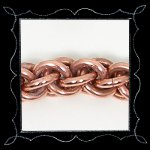
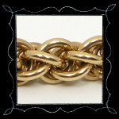
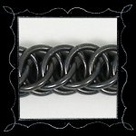

Chainmaille Jewelry Chainmaille Jewelry
Chainmaille Jewelry Chainmaille JewelryMany years ago, I became interested in the construction of chainmaille armor; I had plenty of wire and nothing but time, so I researched the subject and discovered that some people online indeed made their own chainmaille, and that I already had all the materials and tools I required. The first project I undertook was a ridiculous copper chainmaille shirt, soon abandoned. Instead, I found much more satisfaction in making something that people might actually wear - I turned to jewelry.
In order to avoid slow load times and jerky browser scrolling, I have seperated my chainmaille jewelry into categories by metal.
|  |  |  |  |
| Copper | Gold | Steel | Miscellaneous |
Created by Sean Corron, April 2, 2011.